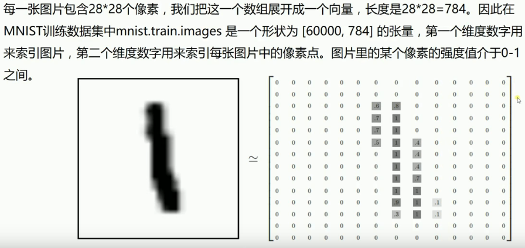
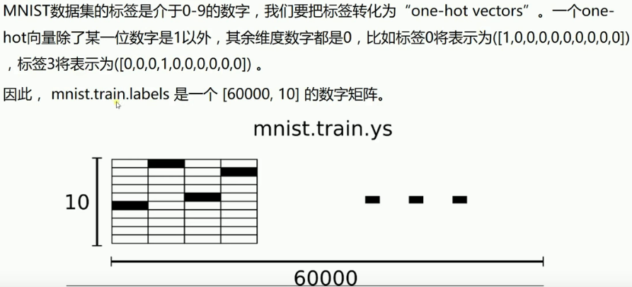
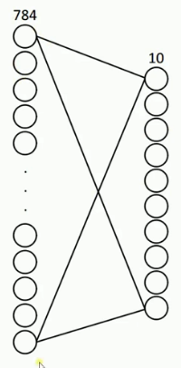
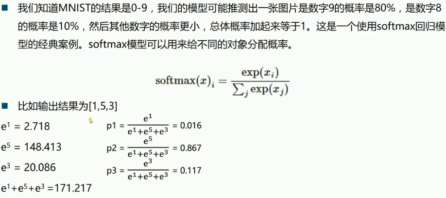
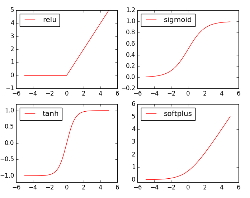

Tensorflow 简单线性回归实例
Table of Contents
1 Tensorflow 2 MNIST实例分析
1.0.1 MNIST introduction





2 简单非线性回归实例
<<包导入>> <<数据准备>> # numpy构造(with/without noise) # 从已有数据集导入内存 # 设置批次大小 <<图构造>> # 一模,两函,两器 <<图计算>> # 运行两器 # 结果分析 # 绘图

import matplotlib.pyplot as plt import numpy as np import tensorflow as tf
# 使用 numpy 生成200个随机点 x_data = np.linspace(-0.5, 0.5, 200)[:, np.newaxis] (Dataset) noise = np.random.normal(0, 0.02, x_data.shape) y_data = np.square(x_data) + noise
注意这里构造的是整个数据集 (sample_num, smaple_dimension),有两个原因必须这么做:
- 因为后面要做 one_sample * W + b 的矩阵乘法 所以这里必须给出 sample dimension
- 因为后面喂数据给 placeholder 的时候,是把 run(fetch, feed) 中的feed一行一行拿出来喂进 NN 中
所以他必须是一个二维数组, 注意神经网络是就像一个函数 f(x), 他是针对单个数据点进行预测的. 这点千万搞清楚. 这里和这里是配套使用的,必须要保持一致.
数据集形状 单个样本形状
--------------- ---------
x_data = np.linspace(-0.5, 0.5, 200)[:, np.newaxis] x = tf.placeholder([None, 1])
\ /
+
/ \
v v
tf.run(train, feed_dict={ x : x_data})
rank=1 rank=2 ------ ------- (200, ) vs (200, 1) In [2]: import numpy as np In [9]: x_data = np.linspace(-0.5, 5, 200) In [36]: x_data.shape Out[42]: (200,) <==== In [43]: x_data = np.linspace(-0.5, 5, 200)[:, np.newaxis] In [64]: x_data.shape Out[68]: (200, 1) <====
图结构与其在代码中的名称示意图
layer name: input layer 1-hiden layer output layer
|<--------------->|<--------------->|
| Weights_L1 | Weights_L2 |
output of
this layer: 'x' 'L1' 'prediction'
*
*
* +-- square of residual
* |
* * * <========> y
*
*
*
*
*
# 定义两个 placeholder x = tf.placeholder(tf.float32, [None, 1]) (placeholder) y = tf.placeholder(tf.float32, [None, 1]) # 定义神经网络中间层 Weights_L1 = tf.Variable(tf.random_normal([1, 10])) biases_L1 = tf.Variable(tf.zeros([1, 10])) Wx_plus_b_L1 = tf.matmul(x, Weights_L1) + biases_L1 L1 = tf.nn.tanh(Wx_plus_b_L1) # 定义神经网络输出层 Weights_L2 = tf.Variable(tf.random_normal([10, 1])) biases_L2 = tf.Variable(tf.zeros([1, 1])) Wx_plus_b_L2 = tf.matmul(L1, Weights_L2) + biases_L2 prediction = tf.nn.tanh(Wx_plus_b_L2) # 二次代价函数 -> 优化器 -> 最小化代价函数 loss = tf.reduce_mean(tf.square(y - prediction)) optimizer = tf.train.GradientDescentOptimizer(0.1) train = optimizer.minimize(loss) # 初始化器 init = tf.global_variables_initializer()
None 表示喂食数据时自动计算
-----
x = tf.placeholder(tf.float32, [None, 1])
---------
不论以后喂给我的数据点是什么形状,
我都将其转换成(~,1)的形状.
with tf.Session() as sess: # 运行初始化器 sess.run(init) # 运行优化器 for _ in range(2000): sess.run(train, feed_dict={x: x_data, y: y_data}) # 获得预测值 prediction_value = sess.run(prediction, feed_dict={x: x_data}) # 绘图 plt.figure() plt.scatter(x_data, y_data) (scatter) plt.plot(x_data, prediction_value, 'r-', lw=5) (plot) plt.show()
线图参数中的 'r-'('r' 红色, '-' 实线), 'lw=5'表示线宽 5 pixel

3 简单MNIST数据集分类
<<包导入>> <<数据准备>> # numpy构造(with/without noise) # 设置批次大小 # 从已有数据集导入内存 # 设置批次大小 <<图构造>> # 一模,两函,两器 <<图计算>> # 运行两器 # 结果分析 # 绘图
1: import tensorflow as tf 2: from tensorflow.examples.tutorials.mnist import input_data 3: 4: # 载入数据 5: mnist = input_data.read_data_sets("MNIST", one_hot=True) (one_hot) 6: 7: # 设置批次大小 8: batch_size = 100 (batch_size) 9: # 计算共有多少批次 10: n_batch = mnist.train.num_examples // batch_size (floor division) 11: 12: # 定义两个 placeholder 13: x = tf.placeholder(tf.float32, [None, 784]) 14: y = tf.placeholder(tf.float32, [None, 10]) 15: 16: # 创建简单神经网络(无隐藏层) 17: W = tf.Variable(tf.zeros([784, 10])) 18: b = tf.Variable(tf.zeros([10])) 19: prediction = tf.nn.softmax(tf.matmul(x, W) + b) 20: 21: # 二函,二器 22: init = tf.global_variables_initializer() 23: optimizer = tf.train.GradientDescentOptimizer(0.2) 24: loss = tf.reduce_mean(tf.square(y-prediction)) 25: train = optimizer.minimize(loss) 26: 27: # 预测对错存在一个向量中 28: correct_prediction = tf.equal(tf.argmax(y,1), tf.argmax(prediction, 1)) (count correct prediction) 29: # 计算准确率 30: accuracy = tf.reduce_mean(tf.cast(correct_prediction, tf.float32)) 31: 32: 33: # 图计算 34: with tf.Session() as sess: 35: sess.run(init) 36: # 采取训练一轮就测试一轮的方式 37: for epoch in range(21): 38: # 训练模型 39: acc_train = 0 40: for batch in range(n_batch): 41: batch_xs, batch_ys = mnist.train.next_batch(batch_size) 42: _, acc_train = sess.run([train, accuracy], feed_dict={x:batch_xs, y:batch_ys}) 43: 44: # 测试模型 45: # 测试集必须使用已经训练完毕的模型 46: acc_test = sess.run(accuracy, feed_dict={x:mnist.test.images, y:mnist.test.labels}) 47: print("Iter " + str(epoch) + " ,Train:" + str(acc_train) + " ,Test:" + str(acc_test)) 48:
数据集label总共有几种取值,就导入成几维的 one_hot 向量. 这里数据集 label 总共有 0~9 共10种取值, 就把每个 label 导入为10维的one_hot向量.
batch 是以一个矩阵的形式(batch_size * smaple_dimension)喂食数据
'correct_prediction'中存储的是 boolean 值
y 中存有60000个one-hot vector:(60000, 10), 每个针对y的第二维度(也就是'行',每个
sample)做 argmax, 可以得到 60000 个 max_value_index 组成的一个 Tensor; 同样的
prediction经过argmax也会得到60000个 max_value_index 组成的一个 Tensor. 然后对
这两个 Tensor 进行 element-wise 比较就可以得到一个 (60000,1) 的boolean Tensor.
one_hot vector of prediction(output
label of of NN) of
index one sample one sample
0 0 \ / 0.01
1 0 | | 0.12
2 0 | | 0.07
3 0 | equal or not | 0.01
4 1 | index of max value = 4 ============= 5 = index of max value | 0.02
5 0 | | | 0.7
6 0 | | | 0.01
7 0 | | | 0.03
8 0 | | | 0.15
9 0 / v \ 0.15
equal => True
not equal => False
------------------------>---------------------|
| tf.equal | tf.reduce_mean
| | -----------------> correct
+---------------------+ v ^ accuracy
| | | |
tf.argmax tf.argmax
+---------- +-----------------------------
|0001000000 |.7 .2 .1 .0 .0 .0 .0 .0 .0 .0 t 1.0
+---------- +-----------------------------
0001000000 .7 .2 .1 .0 .0 .0 .0 .0 .0 .0 f 0.0
0001000000 .7 .2 .1 .0 .0 .0 .0 .0 .0 .0 t 1.0
0001000000 .7 .2 .1 .0 .0 .0 .0 .0 .0 .0 t 1.0
... ... . .
... ... . .
... ... . .
0001000000 .7 .2 .1 .0 .0 .0 .0 .0 .0 .0 f 0.0
| |
v ^
| tf.cast |
-------->------|
3.1 cross_entropy
\(\theta(s)=\frac{1}{1+e^{-s}}\)
\(loss(f)=1/N\sum_{n=1}^N\theta(-y_nw^T_tx_n)(-y_nx_n)\)
tf.reduce_mean(tf.sigmoid(tf.negative(tf.multiply(y, prediction))))